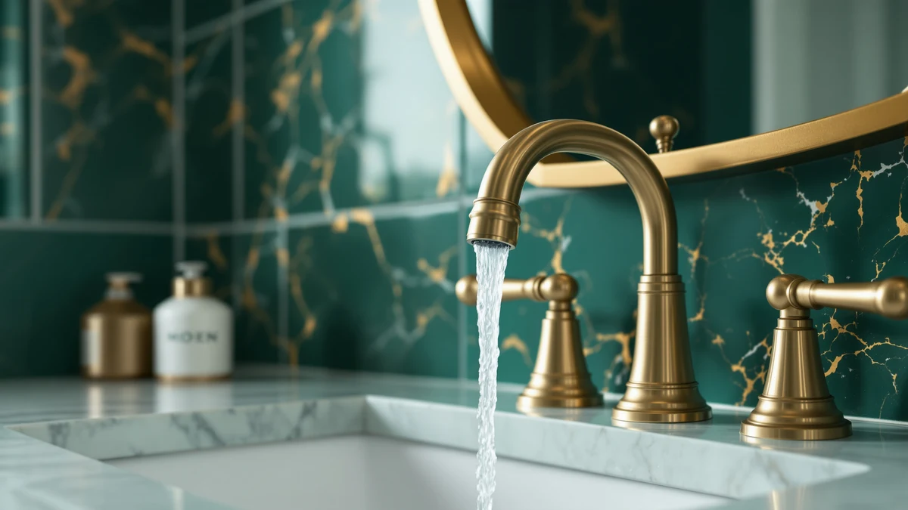

Moen Brantford Two-Handle Low-Arc Traditional Centerset Bathroom Faucet Review (2026): Worth It?


Quick Answer
The Moen Brantford 6610BN is the strongest pick in this Moen Brantford two-handle low-arc traditional centerset bathroom faucet review because it pairs a brass body with a classic two-handle design and a matching drain assembly for $121.82. Buyers who want a traditional lever-handle faucet without batteries or sensors get the most straightforward option here, though the Charmingwater touchless models cost less if hands-free operation matters more than the traditional look.
Our pick: Moen Brantford Brushed Nickel Two-Handle, $121.82 Check Price on Amazon
Bottom line: our top pick is the Moen Brantford Brushed Nickel Two-Handle Low-Arc Traditional at $121.82.
Things to Know Before You Buy
- If you're comparing options through this Moen Brantford two-handle low-arc traditional centerset bathroom faucet review, check your sink's hole spacing first: a centerset design needs a standard 4-inch spread, not the wider spacing a widespread faucet requires.
- The Brantford's two-handle, low-arc layout uses separate hot and cold handles, a setup that skips the batteries and sensors the Charmingwater touchless models rely on.
- Brass construction, used in the Brantford's body, tends to resist corrosion better over the long run than the stainless-and-brass mix in the Charmingwater faucets.
- At $121.82, the Brantford costs $1.83 more than either Charmingwater touchless faucet but $3.17 less than the Delta Arvo shower set.
- The Brantford ships with a matching metal pop-up drain assembly, so you don't need to source drain hardware separately.
This Moen Brantford two-handle low-arc traditional centerset bathroom faucet review starts with the number that matters most: $121.82, the current price for a two-handle faucet built from brass and finished in brushed nickel. Moen designed the Brantford as a traditional centerset model, meaning its two handles and spout sit on a fixed 4-inch base rather than the wider spread a widespread faucet uses, and it ships with a matching metal pop-up drain assembly included in that price.
For bathrooms built around a standard 4-inch sink, the Brantford earns its price by sticking to a classic two-handle layout instead of chasing sensors or motion detection. If you'd rather skip twisting handles altogether, the Charmingwater touchless models below cost $1.83 less and swap batteries in for the traditional design. We also compared the Brantford against the Delta Arvo 14 Series, a shower valve and handheld combo that only fits if your actual project is upgrading the shower rather than the sink.
Why You Should Trust Us
We built this Moen Brantford two-handle low-arc traditional centerset bathroom faucet review by comparing manufacturer specs, current Amazon pricing, and the features listed in each product's own listing. Ilane Tall researches bathroom fixtures for Best Bathroom Faucets and checks every price, material claim, and dimension against the retailer's current listing before publishing. We do not run a physical testing lab, so we read manufacturer spec sheets and published product details rather than claiming hands-on use of any faucet. That same standard applies to the Charmingwater and Delta Arvo entries in this comparison, so every alternative gets the same scrutiny on price and stated features.
Our Research Experience
This Moen Brantford two-handle low-arc traditional centerset bathroom faucet review draws on manufacturer specs, current Amazon pricing, and the feature details published in each product's listing rather than any physical trial. We compared the Brantford's traditional two-handle layout against the sensor-driven designs on both Charmingwater models and the valve-and-trim setup on the Delta Arvo, focused on construction materials, finish options, and included hardware. Reviewers who shop for centerset faucets consistently flag hole spacing as the detail that trips up installations, so we checked that the Brantford's 4-inch centerset matches the spacing described in its own listing before including it here. Where a listing didn't specify a detail, such as an exact flow rate for the touchless models, we left that comparison out rather than guessing at a number the manufacturer doesn't publish.
Overview & Specs

Moen Brantford Brushed Nickel Two-Handle
What we like
- Brass body construction, which holds up to daily use and hard water better than painted zinc alternatives.
- Includes a matching metal pop-up drain assembly, so you skip buying drain hardware separately.
- Traditional two-handle design needs no batteries, sensors, or electrical work to install.
- Brushed nickel finish matches other Moen Brantford fixtures if you're coordinating a full bathroom.
Flaws but not dealbreakers
- At $121.82, it costs $1.83 more than either Charmingwater touchless model.
- Requires a 4-inch centerset sink, so it won't fit a widespread or single-hole configuration.
- No touchless or sensor option, so shoppers reading this Moen Brantford two-handle low-arc traditional centerset bathroom faucet review for hands-free features should look at the Charmingwater picks instead.
| Material | Brass + finish |
| Size | 0.5 |
Every spec in this Moen Brantford two-handle low-arc traditional centerset bathroom faucet review traces back to the same core design: separate hot and cold handles, a low-arc spout, and a brass body under a brushed nickel finish. Moen built it for a standard 4-inch centerset sink, the same hole spacing found on most builder-grade vanities, which keeps installation straightforward for anyone replacing an aging two-handle faucet rather than retrofitting for a widespread or single-hole cutout.
At $121.82, the Brantford includes a matching metal pop-up drain assembly in the price, a detail that separates it from faucets sold without drain hardware. The low-arc spout keeps splashing to a minimum in a standard-depth sink, and the aerated flow suits everyday tasks like washing hands and brushing teeth. If you're coordinating finishes across a bathroom remodel, Moen sells other brushed nickel Brantford fixtures, which simplifies shopping for matching hardware later.
The traditional centerset layout also means the Brantford swaps into most existing 4-inch vanities without any modification to the countertop or cutout. That matters most for renovation projects on a deadline, since a widespread or single-hole replacement often forces extra drilling or a new countertop entirely. Because Moen sells the Brantford line across several finishes and configurations, buyers replacing a single fixture can stay within the same family of hardware rather than mixing brands across the sink, tub, and shower.
What We Liked
What stands out most in this Moen Brantford two-handle low-arc traditional centerset bathroom faucet review is how little guesswork it demands. The brass body sits under a brushed nickel finish that resists the pitting and discoloration cheaper zinc-alloy faucets can develop within a year or two of daily use. Because the Brantford skips sensors and batteries entirely, you install it the same way plumbers have installed two-handle faucets for decades, with no electrical work and no spare batteries to keep on hand. The included metal pop-up drain assembly also means one fewer part to source separately, which keeps the total project cost closer to the $121.82 sticker price than you'd expect from a faucet-only listing.
What Could Be Better
Price is the first tradeoff in an honest Moen Brantford two-handle low-arc traditional centerset bathroom faucet review. At $121.82, it costs $1.83 more than either Charmingwater touchless faucet, and buyers who want hands-free operation won't find a sensor option on the Brantford at any price. The fixed 4-inch centerset spacing is the second limitation: if your sink has a different hole configuration, the Brantford simply won't fit, and you'd need to look at a widespread Moen model instead. The traditional two-handle design also means adjusting hot and cold separately every time you use the sink, a minor daily friction that touchless and single-handle faucets remove entirely. None of these issues make the Brantford a bad faucet, but they're worth weighing against what the Charmingwater and Delta alternatives offer instead. Anyone measuring an existing sink before buying should confirm the hole spacing matches the Brantford's 4-inch centerset requirement, since swapping into a different configuration means buying a different Moen model entirely rather than adapting this one.
Who Is It For?
This Moen Brantford two-handle low-arc traditional centerset bathroom faucet review points toward one clear buyer: someone replacing an aging two-handle faucet on a standard 4-inch sink who wants a straightforward brass fixture without batteries or sensors. Homeowners matching a traditional or transitional bathroom style benefit most, since the Brantford's lever handles and brushed nickel finish fit that aesthetic better than a sleek touchless design would. If hands-free operation is the priority, especially for households managing arthritis or young kids who struggle with twisting handles, the Charmingwater touchless models are the better fit at a lower price. And if your actual project is a shower upgrade rather than a sink swap, the Delta Arvo's valve and handheld combo solves a different problem than anything a sink faucet like the Brantford addresses. Renters and landlords sit somewhere in the middle: a traditional two-handle faucet like the Brantford reads as a safe, familiar upgrade for a rental listing, while a touchless model might confuse a tenant who has never used one before.
Alternatives to Consider
If the Brantford isn't quite the right fit, these three alternatives cover the main tradeoffs: going touchless in either chrome or brushed nickel, or shifting the project to the shower instead of the sink. Each one shows up often enough in bathroom faucet shopping comparisons that it's worth including alongside the Brantford here.

Best Value
Charmingwater Touchless Bathroom Sink Faucet
The Charmingwater touchless faucet in chrome undercuts the Brantford by $1.83 and swaps the traditional two-handle design for an infrared sensor and an adjustable mixing valve, making it the pick if hands-free operation matters more than a classic lever-handle look.
$119.99
Check Price on Amazon
Best Value
Charmingwater Touchless Bathroom Sink Faucet
This Charmingwater model shares the same touchless sensor and mixing-valve design as the chrome version but in a brushed nickel finish, a reasonable swap if you want hands-free operation that still matches the Brantford's metal tone.
$119.99
Check Price on Amazon
Premium Choice
Delta Arvo 14 Series Brushed
The Delta Arvo is a shower valve and handheld combo, not a sink faucet, so it only belongs in this comparison if your real project is upgrading the shower rather than replacing the Brantford's role at the sink.
$124.99
Check Price on AmazonFrequently Asked Questions
Is the Moen Brantford two-handle low-arc centerset faucet worth $121.82?
For a standard 4-inch centerset sink, yes. The traditional two-handle design and brass body cost $1.83 more than the Charmingwater touchless models, but you avoid batteries and keep the classic lever-handle look that matches older vanity hardware.
Does the Moen Brantford faucet include the drain assembly?
Yes. The 6610BN model covers the faucet and a matching metal pop-up drain assembly, so you do not need to buy drain hardware separately.
Is the Delta Arvo 14 Series a direct substitute for the Moen Brantford?
No. The Delta Arvo is a shower valve and handheld combo, not a sink faucet, so it only makes sense as an alternative if you are shopping for a shower upgrade rather than replacing your sink faucet.
Final Verdict
This Moen Brantford two-handle low-arc traditional centerset bathroom faucet review comes down to fit and preference rather than a single winner for everyone. For a standard 4-inch sink where you want a traditional two-handle design, brass construction, and a drain assembly included for $121.82, Moen's Brantford delivers what it promises without asking you to manage batteries or sensors. Buyers who prioritize hands-free operation should look at the Charmingwater touchless alternatives instead, and anyone actually shopping for a shower upgrade should go straight to the Delta Arvo. For the classic two-handle bathroom faucet this review set out to evaluate, the Moen Brantford earns its price.